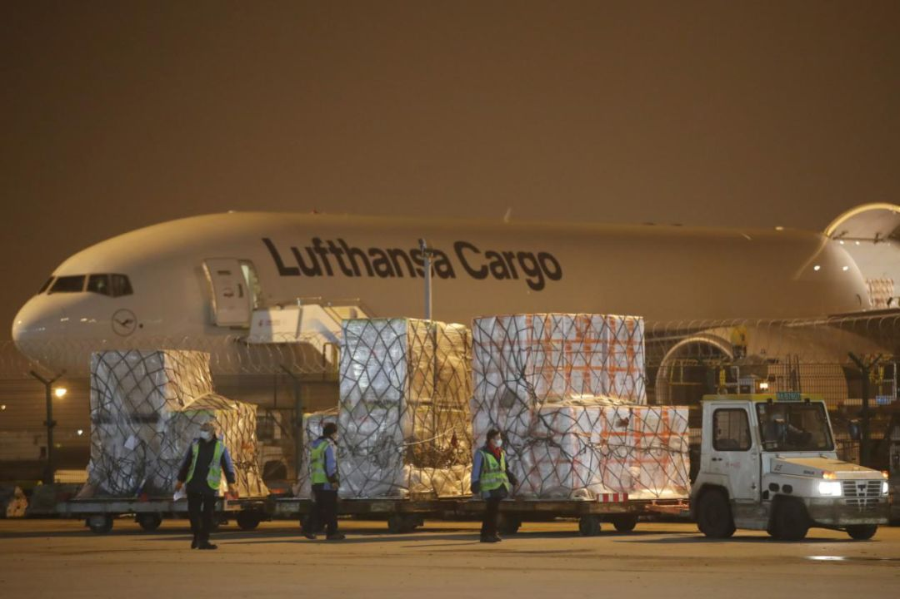
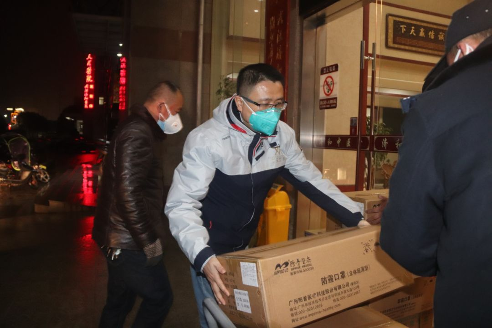
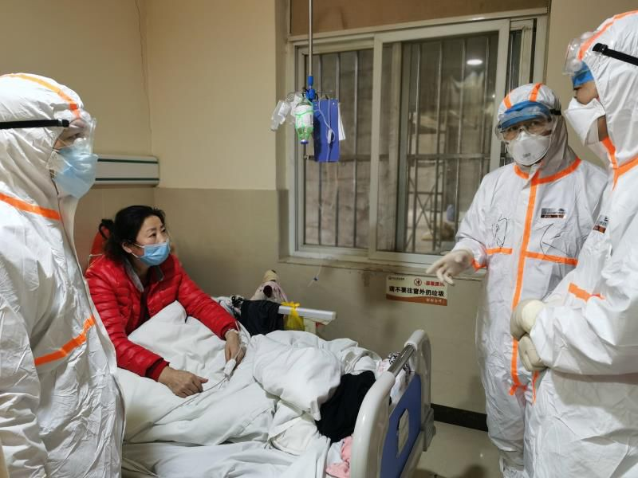
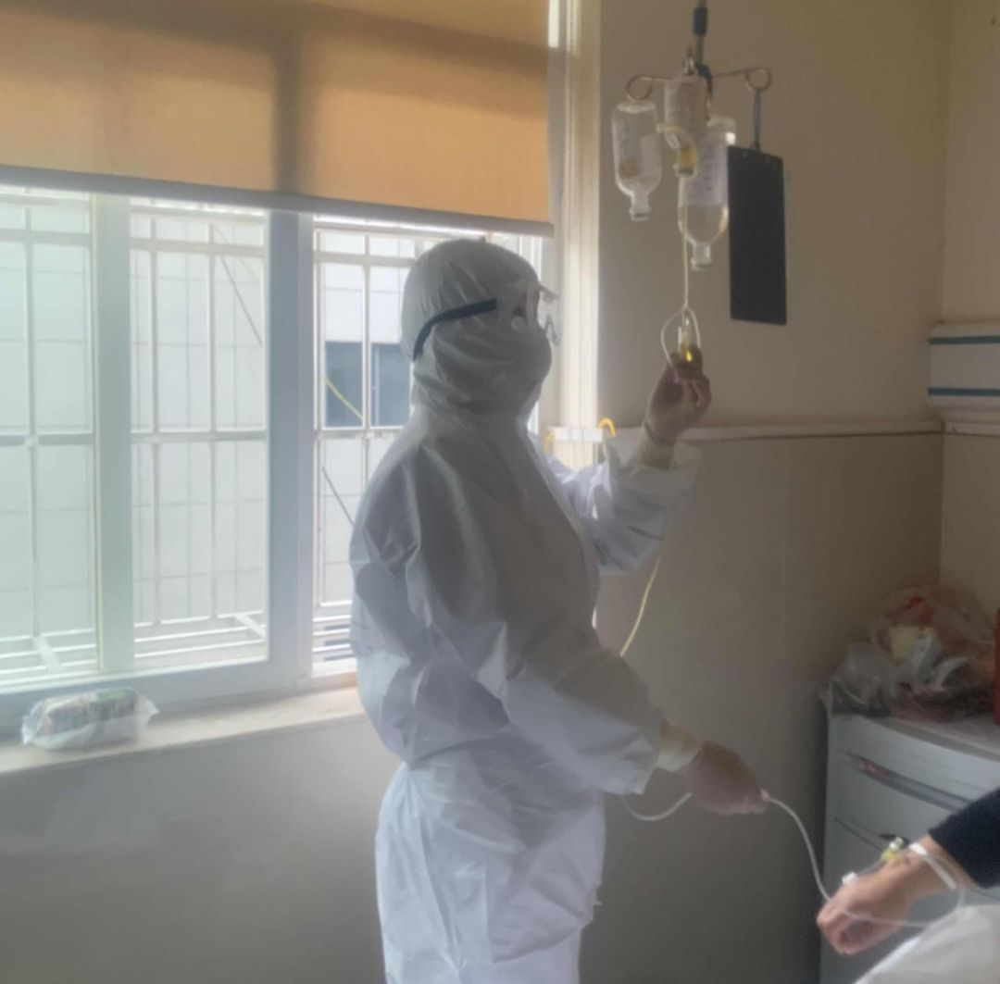
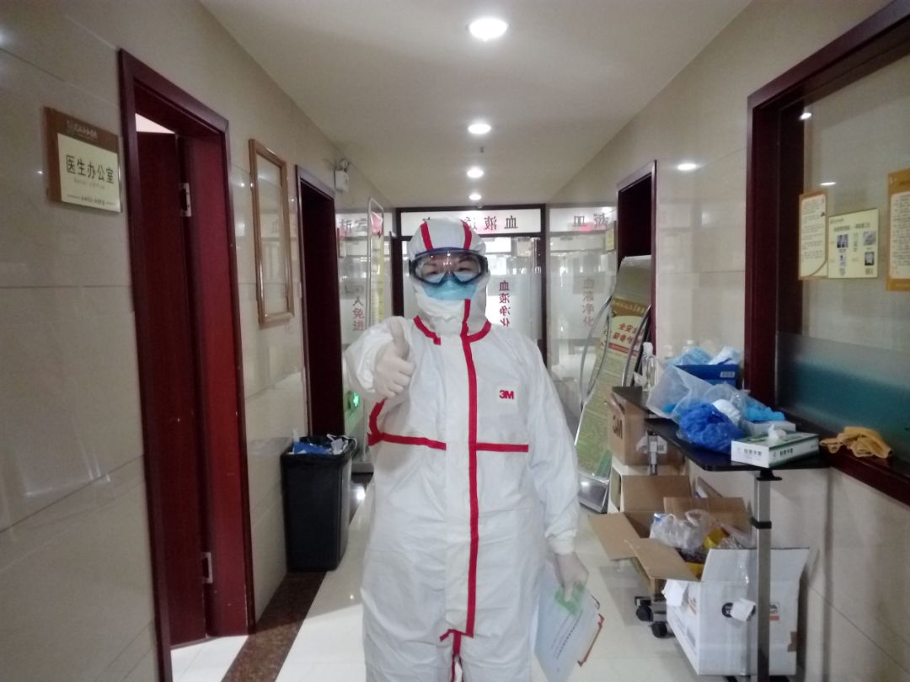
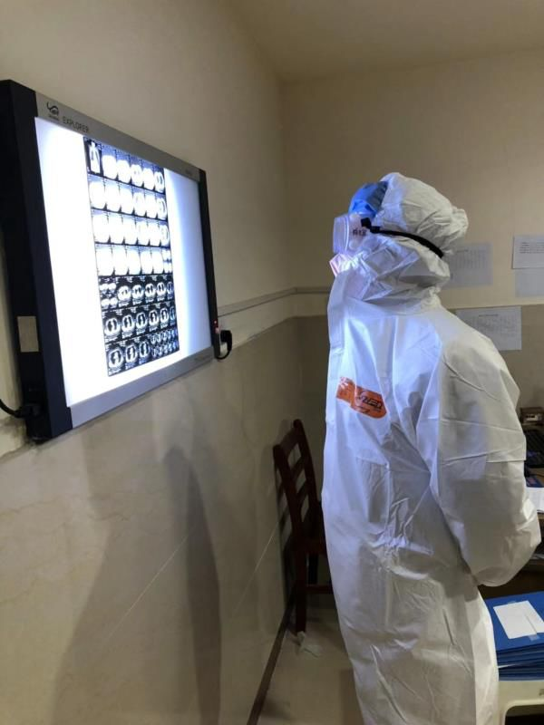
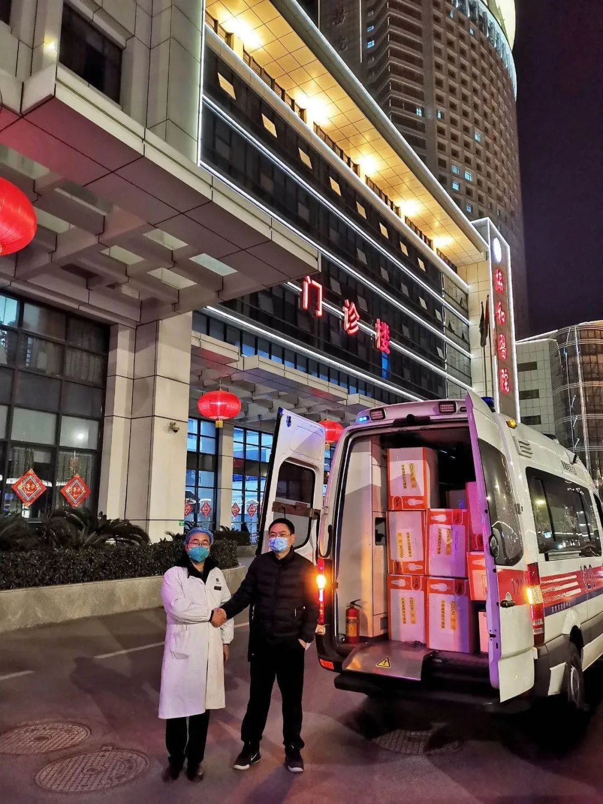

抗击过非典的护士长，来了武汉
原文链接 备份链接 文/六筒 李岩半年前刚去过武汉，和家人去旅游，主要想看看黄鹤楼。那还是夏天，热气蒸得人头上冒烟。高温挡不住蜂拥的游客，摩肩接踵，拥塞的车辆在大道上艰难挪动。“真是个大都市”，她想。 李岩是河北医科大学第二医院呼吸与危重 …
武汉济和医院的命运在1月23日那天分叉了。
小年夜，也是武汉发出“封城”公告的同一天，这家位于武汉蔡甸区的非公医疗二级综合医院被征用为新冠肺炎患者定点救治医院，成为武汉不到10家的首批定点医院中的一员，继而被推到了一场全球瞩目的公共医疗事件的最前线。
今天，距离武汉“封城”刚好一个月。30天里，济和医院的故事高度浓缩，成为武汉城市命运的一个生动侧写。
枢纽
内科医生晏飞还记得当晚的状况：100多位病人被救护车一趟趟送来济和，很快把感染区200张病床中的绝大部分填满，医护人员在刚刚改建完成的隔离病区中疲惫奔走。呼吸机及高流量氧等关键设备出现了相当大的紧缺，只能满足一个病区的需求；HIS（Hospital Information System）录入也没能跟上，医生们只能抓起纸笔快速抄写医嘱。

在骤然超负荷运转的医院里，奔走一天的医护人员身心疲惫
此时，济和医院大部分的医护人员已经放假，只剩留守的50余名医护人员。防护设备也捉襟见肘，库存里只有500件不能满足隔离区要求的普通防护服，N95以上的高级别医用口罩严重缺乏。一个医生如果24小时连轴转，白天需要1-2件防护服，夜班需要2-3件，500件防护服就只够50余名医护人员5天所需。
医用物资、专业医护人员双重匮乏，这是1月23日全武汉乃至全湖北所面临的普遍状况。但济和医院略为不同的是，它是复星医疗集团旗下的一员，身后是中国代表性的全球化企业之一——复星国际（后文简称“复星”）。
此时，复星的上海总部，一场大的湖北驰援计划在同步落棋和推进。
第二天，1月24日上午9:46，复星国际董事长郭广昌发动了全球医疗物资调配计划。12小时内，已经锁定了海外20万只口罩和5万件医用级防护服。全球合伙人和海外业务团队、首代系统全部动员，订单在不断增加，回国运输渠道正在打通。

1月24日，复星全球医疗物资调配计划启动，大额订单开始全球锁定
1月25日起，复星医疗集团紧急动员旗下医院，从江苏、广东、浙江、安徽、湖南等地，抽调呼吸、急诊、重症医学、院感等专业的业务骨干，共同组建复星医疗援鄂医疗队，并于2月6日晚，作为全国非公医疗首支援鄂医疗队，抵达武汉蔡甸。目前，已有超过30名成员投入到蔡甸区的一线救治工作中。

复星援鄂医疗队集结武汉
与此同时，1月28日深夜，复星全球采购的首批紧急医用物资跨越9000公里，借助飞机+货车，抵达武汉。截至2月22日零点，复星全球调配运回防护服101万件、口罩124万只、护目镜75000副、医用手套11万副，总计243.5万件医疗防护物资，另加240台呼吸机。绝大部分已全部运抵疫情防控一线。

1月28日凌晨，复星全球调配首批物资从法兰克福抵达上海，29日凌晨这批物资被紧急送到一线
这些物资中运往湖北的大部分在济和医院汇集，又经过这个“枢纽”，点对点输送至孝感、黄冈在内12个地市的防控一线，包括协和医院、同济医院、中南医院、武汉中心医院、雷神山医院、火神山医院在内的80余家医院。
九省通衢的武汉，曾经是地理位置最为便捷的全国中转枢纽。当它按下暂停键后，像济和医院这样的支点，自发地运转起来，生长出一种顽强的韧劲。
日均行驶1000公里的救护车
皮浩从来没觉得自己那么重要过。这位42岁的武汉人是济和医院车队队长，负责驾驶救护车。**从1月24日起，这台平日仅仅在区内往返的救护车，经常日均要跑上1000公里。
**

皮浩开着120疾驰送物资，“救急就是救命”
1月23日武汉封城后，济和医院立马动员医护人员们返岗，但是武汉的交通几近瘫痪。
汉口火车站只许出站不许进站，大部分涉及武汉的航班被取消，省内多个高速公路一日内逐一封闭……这台有着特殊通行证的救护车此时被派上了大用场。
最初几天，皮浩开着它往返于孝感、黄冈、襄阳等地，一天接回来六七名医护人员。而此前医院下达了命令，只要是返岗的医护人员，哪怕只有一个人，也要派车去接。
几乎是同时，复星医疗总裁陈玉卿、复星医疗执行总裁包勤贵，以及徐州徐矿总医院呼吸科主任贾晓民分三路，于大年初一出发，各自辗转，在岳阳会合。从深圳恒生医院调来的一辆救护车已在岳阳等候。会合后，三人便自驾这辆满载N95口罩、防护服等医用物资的救护车赶往武汉。
他们不知道的是，这两台救护车在日后湖北全境的驰援中将发挥巨大的作用。
至此，仅仅两天时间，以陈玉卿和包勤贵为主的复星武汉前线指挥部在济和医院已经运转起来。
“当时还没想过要承担湖北地区医院急需物资的支援调配工作，”晚上11点，陈玉卿在电话里回忆，“我们只想着必须在一线，保护好自己的同事，也鼓励他们保护好病人。”

复星武汉前线总指挥、复星医疗集团总裁陈玉卿在搬运医疗物资
这已然是一件艰巨的任务。济和医院是一家二级医院，并不以呼吸科见长，全院只有约260名医护人员。作为区级定点救治医院，它承担了救治轻重症患者的任务。
济和医院内二科医生孙梦冰介绍，许多人在隔离之后，病情加重了，就直接送到这里诊疗。如果转成危重症，就要立刻转往上级医院抢救。武汉三级分层分级的防护体系中，济和这样的定点医院，起到了中转枢纽的作用。
在武汉3万多名的确诊病例中，轻重症患者是样本庞大的群体。贾晓民是经历过2003年抗击SARS的专家，到了济和医院，久经沙场的他也吃了一惊：病人数量太多——200张病床，从第一天收治到目前为止，始终保持病床满负荷的状态。最初的阶段，孙梦冰一个人一天须负责13位住院病人。
贾晓民还记得初来济和医院时所见到的慌乱场面。大多数医生都不是呼吸科专业出身，外科、骨科、甚至是妇产科的医生们临阵上战。他们很多不具备防控知识，有的鞋套浅了，不能完全包裹身体；有的戴了双层口罩，“多余的，还难受”。年轻护士胸闷喘不过气，一度怀疑自己被感染了，其实只是戴口罩时间太长导致缺氧。
在恐慌和人手不足的双重压力中，他们穿着防护服在25度的室温中每日工作10余个小时。护目镜卡在脸上，一取下来，显出深深的勒痕。
医护人员能不能跟上？医疗物资能不能跟上？全武汉都在发出疑问。
那些防护服的字体歪歪扭扭的

武汉济和医院医护人员背影
皮浩不会忘记1月28日深夜的那个画面。武汉蔡甸高速公路路口，他和包勤贵要去接应复星从上海运抵前线的第一批医疗物资。
1月26日晚上，复星动员全球力量采购到的1万个口罩运抵上海。20余个小时后，它们即将经由上海-武汉900公里的货运生命线，输送至前方。此后的每一天，它将永不间断。
那是一个风大雨大的夜晚，气温刚过零度。雨水打在车窗上，形成一种刺耳的声响。两人按照要求把救护车停在检测站，徒步赶往服务区等候两辆沪牌、长至17.5米的红色箱式大货车。
第一辆车错过了路口，皮浩赶快开车，追了几十公里领了回来。
天上下着冻雨，公路停摆。“好像武汉的空气中都是病毒”，皮浩闪出这个念头。
然后他眼见着包勤贵在雨中用手机打了一个小时电话，引导车过来，也沟通司机的防护。约凌晨2点，两个集装箱的物资终于在济和医院卸货。大货车消毒完毕，立即返回上海。
济和医院分为两个区域。1-3区在“清洁”的西楼，4-8区在“污染”的东楼，也是新冠肺炎患者隔离病区。一箱箱的物资就被搬进了西楼仓库，因为储藏空间不够，很多堆放在了门诊大厅。
1月31日下午5点，40岁的岳阳广济医院院感科主任吴琼抵达济和医院时，恰好看到复星的物资车辆停在医院门口。一股暖流突然从胃部涌了上来，“就是安心的感觉”，他笑嘻嘻地说。院感科的主要职责是防止院内病人、医护人员产生交叉感染。
陶飞，佛山禅城中心医院的ICU专家，到济和医院的第一件事就是去物资楼侦查。重症科出身的他最关心高流量氧疗设备的配备问题，这是救治重症新冠肺炎患者的指标性设备，省内多处医院告急。当被告知有20台，上海采购过来的，刚刚就位，“顿时心里有底了”。

佛山禅医ICU主任陶飞（右二）与医疗队另两位专家为患者会诊
物资充裕有时候也是一种“甜蜜”的负担。陶飞每天拿到的防护服都是最高等级的标准，且款式不重样，有的裤边镶着黄道，有的黑道或红道。标签上的字体也每每不一，他认识英文、日文、法文，另外还有一些歪歪扭扭的字母难以辨别。
差异需要适应，比如有的拉链很高，会卡到脖子；有的在拉链之余还须用不干胶封口；还有一件因密闭性太好，以至于把整张脸都包裹起来，只露出眼睛。“防护服里面还有帽子和口罩，就像大热天穿了三层厚衣服。”
他事后问询才知道，这是复星在第一时间从全球20余个国家快速采购到的医用级防护服。那些歪歪扭扭的字母有可能是印度文或葡萄牙文，对应他们的采购地。

各国运抵济和医院的防护服，统一写着：复星全球物资调配
我的3个病人出院了
复星医疗精英的加入，核心目标只有一个：通过早期治疗，不至于让患者发展到重症。新冠病毒很狡猾，它会致使病情在一个相对稳定的时期后突然恶化，“把握节点尤为关键”，陶飞解释。
针对性的培训是必要的。贾晓民抵达济和医院的头几天，主抓的就是让全院以最快速度填补呼吸科的基本知识。每天晚上，他从呼吸道的感染、肺炎的基本表现、影像上怎么鉴别、怎么查血项、怎么做血项分析等展开，逐一剖解诊治新冠肺炎的方法，明确氧分压和氧饱和度是重点关注的指标，让大部分从其他科室抽调的医护人员有了聚焦。
陶飞在治病救人之余，最重要的工作是梳理病例，观察本院危重症病人的发展史。ICU有一句名言：没有忽然变化的病情，只有病情的变化被突然发现。是否及时地在前期发现病变征兆，决定了一个鲜活生命是转重症还是回家团聚，这也是济和医院作为诊治枢纽的价值所在。

复星医疗抗疫专家组组长贾晓民教授在查房，并鼓励病人
深圳恒生医院支援武汉医疗小组领队杨勇就遇到了一个典型的病例。患者第一天来的时候，指脉氧饱和度还比较正常。到了第二天查房时，他的手指已全部发紫，手指血氧饱和度检测结果只有80%，是个危险信号。经过高流量供氧机治疗后，患者才好转。
“从早期转到重症过程的每一个节点，一定要控制住。”陶飞解释，血氧饱和度的数据就是其中一个节点，及时氧疗会减少病人发展为重症的几率。而重症病人的死亡率是很高的，截至2月15日，武汉的重症病例为8530例，病死率2.96%，均高于湖北和全国。
他的病区有一位病人，氧疗后情况得到好转。但气流穿过鼻腔，带来不好的本体感受。“病人反反复复，不予配合，最后转到上级医院插管了。”陶飞既痛惜又不甘。
怎么让病人配合，怎么安抚病人，这也是医院的一大难题。
病人被隔离后特别焦躁，这是一种常态。有位患者因腹痛就诊，查出核酸阳性而入院。他情绪一直激动，不明白胃痛怎么收到这里住院了，怀疑是误诊，要求再次核酸检测，也不配合治疗，每天只是反复追问测试结果。医护人员只有耐心地解释新冠肺炎的临床表现，劝说他安心治疗。三日后，看到“阳性”二字的他一脸失落，沉默良久后，说了一句“加油！武汉加油！中国加油！”
济和医院的护士长吴姣总结出了心得，作为医护人员，首先要主动给病人传播知识，尽可能消除他们内心的恐惧，光说“别怕“这两个字没用。

武汉济和医院护士长吴姣在隔离病区
而有个病人告诉她，以前住院，家人都在旁边。现在这个病，家属不能陪着，只能把护士当成家属。“我们和他们说话，他们会觉得很安心，心情也会好很多，更愿意治疗了”，吴姣介绍自己的方法。
安抚病人对人力配备也是个考验。从“封城”那天开始，济和本院的4个护士长已经连续工作29天，拒绝下火线。
来自康复科的吴姣，第一次被抽调到感染区。“工作量翻了好几倍”。因为很多病人会呼吸困难，所以除了静脉输液等常规工作，她与各种仪器打交道的时间变得很长。呼吸机、雾化器、中心供氧系统、高流量呼吸湿化治疗仪等，都在不间断使用，必须保障病人生命体征的稳定。
新冠肺炎和普通肺炎相比，传染性强，这就要求大家特别注意预防病房内的交叉感染。护士们每天都在做消毒工作，喷撒消毒液，隔一天就给病人换床单被套，统一送到指定地方清洗和消毒。这些工作原来依靠护工分担，但他们中的许多人因为交通原因被阻隔，现在只能由医护人员亲自处理。
像陶飞、吴琼这样的专业医护人员的到来，极大缓解了济和医院本身的压力。本院的医护人员会开玩笑说，看到大家来了，就好像看到了“小甜饼”一样。

岳阳广济医院院感科主任吴琼听说需要去武汉支援，二话不说答应了
人手渐渐充裕了。几天前，济和医院院长柳再奎要求医院强制排班，规定医护人员必须轮休。目前，济和医院的医护/病人比大约是1：3，一个病区约36名病人，配备12位轮班医生护士，救治渐渐进入常态化阶段。
患者也慢慢平稳了心态，更多地体谅起医护人员的不易。比如，与医生谈话时，会故意保持距离。咳嗽时，示意对方别靠近。许多最开始不耐烦的病人，得知援助队是来自江苏、广东的专科精英，便高高握起了拳头，做出鼓励的姿势。
医护人员的情绪也不再高度紧绷，互相给对方的防护服写名字时，偶尔画个爱心，也会加一句“我想回重庆吃火锅”之类的俏皮话。
晏飞说他病房里的病人，目前零死亡，且有3人已治愈出院。“这就是前线继续坚持的最大动力。”

武汉济和医院内科医生晏飞正在查看患者CT结果
把每一个口罩“人肉”快递到80余家医院
12天前，皮浩的救护车坏了。因用得太频繁，从机场回医院的路上，满载医疗防护物资的救护车离合器烧坏了。
从1月29日首批复星采购物资抵达武汉后，陈玉卿和包勤贵的重点工作之一，就是解决如何在湖北全境有效分发物资的问题。
每一天，两人要收到几百个电话和几千条微信，来自各级防疫指挥部、各大医院、各省援鄂医疗队，甚至医院科室主任，都希望得到防护物资的紧急援助。
谁也没有想到，武汉乃至湖北的医疗物资短缺，是一个持续性的问题。1月31日，在“封城”的第8天，湖北省人民政府召开发布会，特别回应了“红十字会接收了大量物资，为什么医院还是缺物资？”的问题。
把救命的医疗防护物资送到阳光照不到，政府暂时顾不到的地方，只能点对点地“人肉”快递。车不得不频繁地用，因为救急就是救命。
可需求这么多，物资怎么才能高效分配？指挥部定下原则：浪费是低效的捐赠，每一个口罩都要物尽其用，每一件关乎生命的物资都要精准送抵。

复星武汉前方副总指挥、复星医疗执行总裁包勤贵代表复星和济和医院，将1000套医用级防护服送到华中科技大学同济医学院附属协和医院（武汉协和医院）
陈玉卿和包勤贵俩人采用了最土的办法——打电话。每一天，两人盯着手机的时间超过14个小时，为了随时与一线的人员密切联系，核实每一家医院的真实状况，动态跟踪它们在战疫过程中的角色变化。
如一家医院设置了多少隔离病区，有多少在隔离病区及发热门诊工作的医护人员，就是硬数据。如果某家医院没有设置隔离病区，而仅仅只有发热门诊，那么带密封胶条的医疗级防护服和红区（隔离区）的N95口罩就不在救急的范围内。
当然也要分析疫区的情况。湖北下辖地级市中，孝感和黄冈形势最为严峻，因两地紧邻武汉，自属的医疗资源不是特别丰富。而襄阳、宜昌、荆州属于次级重灾区，至少当地还有几家大型三甲综合医院。
从对方在沟通中的态度，也可判断防护物资的紧缺程度。“举个例子，如果真的十万火急，我一个电话过去，他会马上来取。如果说过两天有车再来拿，说明暂时没有那么紧张，”包勤贵分析对方语言传递的信息。
几天前，为了研究武汉周边地市的具体需求，他们两人至少拉了包括孝感、黄冈、襄阳、十堰、荆门在内9个地级市防疫指挥部的直线对接群，联络各种渠道——同事、同学、朋友，一点点地盘摸各地动态情形。
“因为现在到处都在紧急求援，需求不可能均匀配给，极有可能会错位”，陈玉卿说。所以哪个医院缺鞋套而非护目镜，哪个城市缺尿不湿而非防护服，一定不能含糊，“都是救命的重要资源，绝不能因错配，轻易浪费。”
济和医院作为中转站的特殊枢纽地位渐渐显现。每一天，一辆辆从上海驶来的货车将物资快速卸下，济和医院的两辆救护车、两辆商务车又将盘点统计完毕的物资，一趟趟分发出去。

武汉济和医院
“日均1000公里，少则开七八趟，多则十几趟，怎么会跑不坏呢？”皮浩还在心痛那辆开了七八年的救护车。三天前，他和陈玉卿、包勤贵分别驾驶车辆出发，以武汉济和医院为轴点，折返于孝感、黄冈和荆州，共6趟。早上8点半出发，次日凌晨最终返回医院。“救护车空间有限，一次性只能装1.5吨的物资，只能往返折腾。”
1月31日晚上，包勤贵代表复星将1000套医用级防护服捐赠给武汉协和医院，从这时候起，陈玉卿和包勤贵两个人二十几天，共分配了近40万套/件医疗防护物资，覆盖湖北全境12个地市的80余家医院。
在雷神山医院的捐赠现场，救护车司机皮浩向我们描述了一个“壮观”的场景：方圆几公里灯火通明，公安、武警、军队、城管、路政等各种机构，货车、负压车、执勤车、救护车、施工车等各种车辆，在这里汇合；穿不同制服的人分工协作，大家非常忙碌，无暇他顾，像一颗颗螺丝钉地高速运转。

2月11日晚，复星从全球紧急采购的5000件胶条防护服、1万个红区口罩、30台医用无创呼吸机和1辆负压救护车等医疗物资，运抵武汉雷神山医院。疫情面前，作揖替代握手成为交接礼仪
国家力量在行动，带来无限的信心和底气。但一家民营企业以一家非公医疗医院为支点，也在前方勉力地做着拾遗补缺的工作，尽一份心力和责任。
包勤贵赶到武汉时，带了一个24寸的行李箱，里面只有两件羽绒服。一件送货、搬货时外穿，一件清洁居家。他的外衣被复星同学戏称为“黑金战衣”——近1个月的酒精喷洒和日晒雨淋，已经让它变得有些板结。
“就先这样在外面撑着吧”，他说，疫情不完，不归。

春暖花开，战士归来
本文仅代表作者观点，不代表本刊立场
推荐阅读
▼

原文链接 备份链接 文/六筒 李岩半年前刚去过武汉，和家人去旅游，主要想看看黄鹤楼。那还是夏天，热气蒸得人头上冒烟。高温挡不住蜂拥的游客，摩肩接踵，拥塞的车辆在大道上艰难挪动。“真是个大都市”，她想。 李岩是河北医科大学第二医院呼吸与危重 …
原文链接 备份链接 一座人口过千万的超级大都市在突降灾疫后陷入休克，然后艰难走出混乱无望 财经封面。创意设计/黎立 文 |《财经》特派武汉记者 刘以秦 信娜 王小《财经》记者 房宫一柳 黎诗韵 俞琴 王丽娜 王静仪 陈亮 李斯洋 李皙寅 …
原文链接 备份链接 同力协契 共克时艰 武汉“封城”已三周，新冠肺炎全国感染人数还在持续上涨。 所有人都在期待拐点的到来，无数白衣天使依旧坚守在抗击疫情第一线，一刻不敢松懈。社会各界也在通过各种方式参与到这场没有硝烟的抗疫保卫战里。 这 …
原文链接 备份链接 拥有1000张床位的火神山医院今天开始接收病人，主要救治确诊患者。 1400位来自军队的医护人员已经抵达，院长张思兵大校是SARS防治专家。 拥有1600张床位的雷神山医院预计2月5日完工。 两家医院投入使用一 …
原文链接 备份链接 「不是告急！是没有了！！」近两日，武汉协和医院、中南医院再次通过社交网络对外募集物资，对此，网友们纷纷发表质疑：全国各地都在往武汉捐医疗物资，物资到底去哪了？ 文 | 易方兴 郑丹 编辑 | 金石 采购难 没货，没货， …